Lasercut box
Box Number 1
 For this part of the assignment, I followed the panopto video pretty closely. It did not take that long—some bits were finicky. For example, building fluency with selecting only the bits I wanted to mirror across an axis. Moreover, tweaking the size parameters did not automatically mirror those changes, so when altering the size of the box to be a bit larger than in the panopto video, I had to retrace some steps. I stuck to the dimensions of "width = height < length", designing a box that is 6 x 6 x 10 in. I did keep the model in mm.
For this part of the assignment, I followed the panopto video pretty closely. It did not take that long—some bits were finicky. For example, building fluency with selecting only the bits I wanted to mirror across an axis. Moreover, tweaking the size parameters did not automatically mirror those changes, so when altering the size of the box to be a bit larger than in the panopto video, I had to retrace some steps. I stuck to the dimensions of "width = height < length", designing a box that is 6 x 6 x 10 in. I did keep the model in mm.
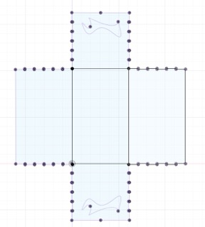
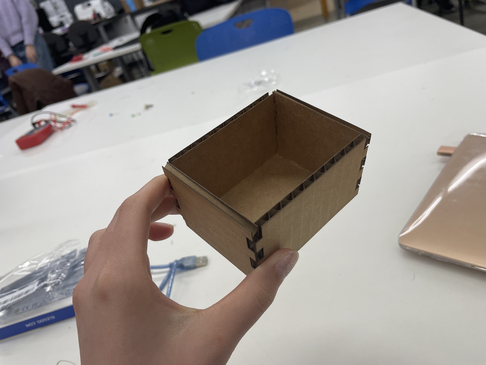

Peeking at some other designs, I decided adding little handles would be nice. Having just learned how to make arcs, I made goofy-looking handles instead of boring rectangular ones.
TODO
Box Number 2
 TODO
TODO
TODO
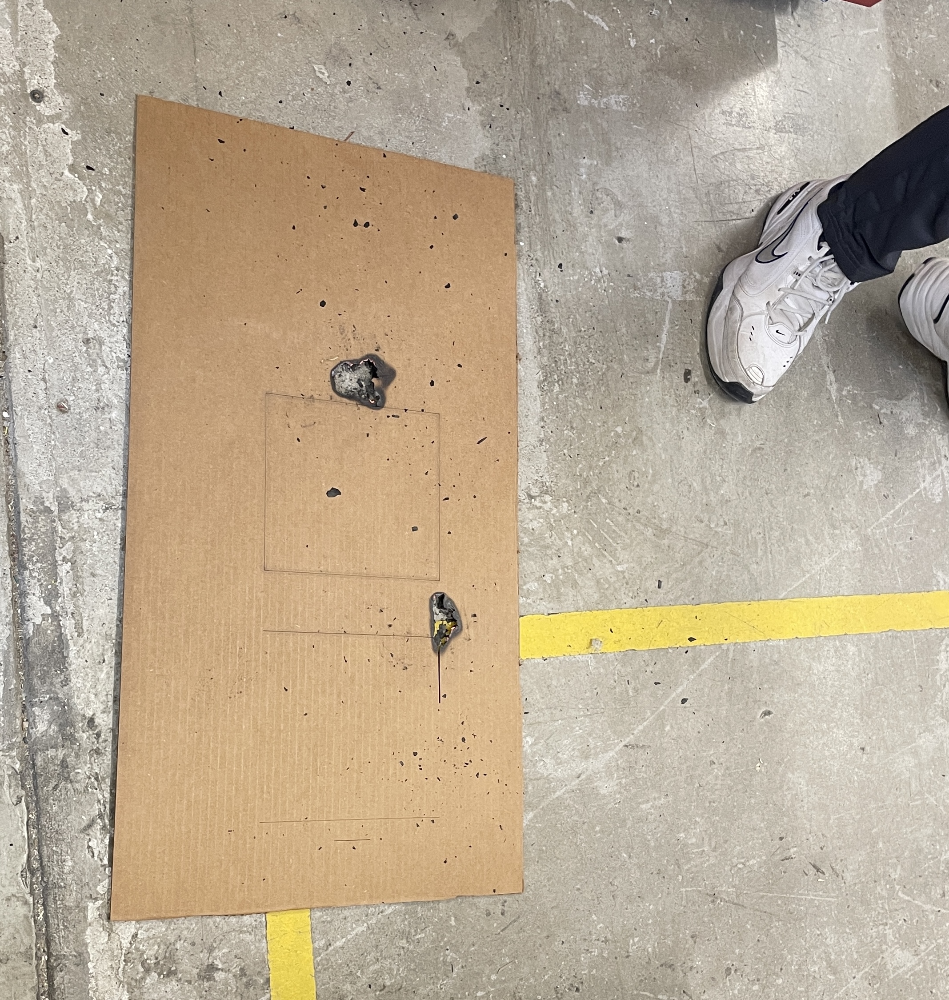
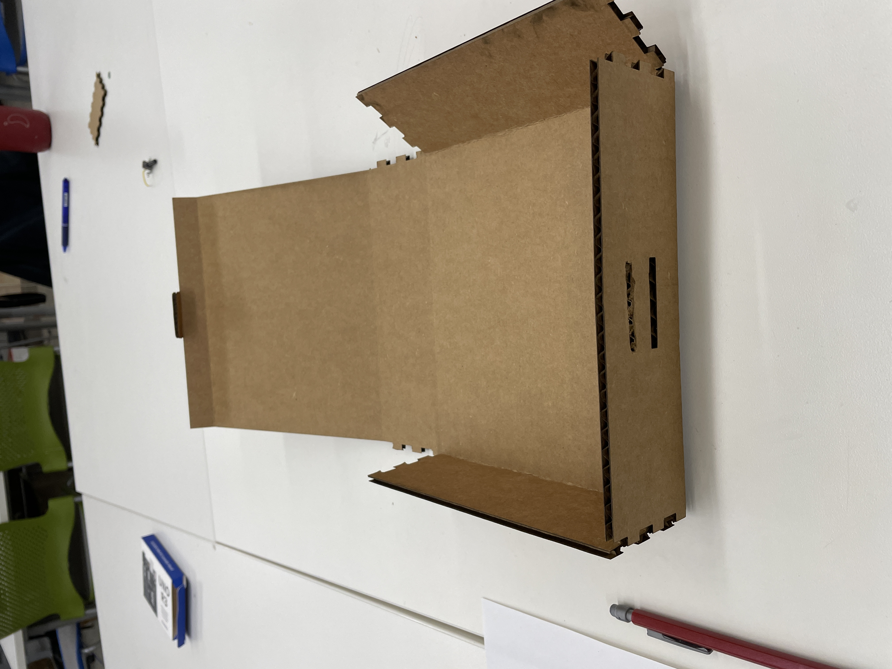

Fusion360 Tutorial
If you look on youtube, there’s a bunch of tutorials for people with “Day XX of Learn Fusion 360 in 30 Days for Complete Beginners”. I was feeling precocious, so I started on Day 2: the glass bottle. I could foresee a rotation, but it was unclear to me how they got that intricate bottle shape!
It turns out, you can import in image (a “canvas”) and sketch on top of that with the arc tool. So that’s what I did! (youtube video here).
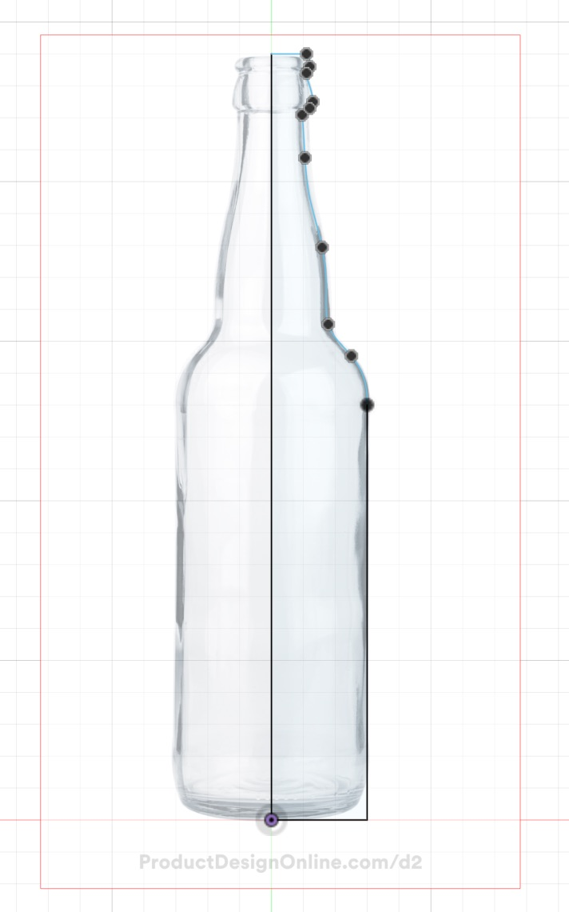
I originally thought I would have to create a sketch akin to a cross section of the bottle, including hard-sketching the width of the bottle and then filleting the insides to get a nice curved surface. Then, the video showed me the power of the shell tool, and I realized that was a terrible idea. Thus, I used the shell tool after revolving, and added the glass texture. One model done!
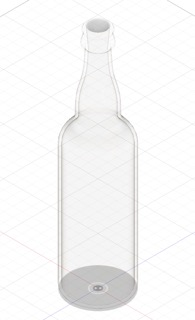
Feeling confident, I then moved to Day 6 of Learn Fusion 360 in 30 Days for Complete Beginners. Hex nut. Another circular shape, but totally different geometries, so I was intrigued. In the first part of the design, I extruded a hexagon for the base. I assumes some sort of fillet would be used to get the characteristic silhouette of a nut, but it turns out that the set of edges is not amenable to that. To work around this, a triangle was created on a place cutting through the bolt, and then revolving it around such that it carved a triangular wedge in a circle around the hexagonal perimeter. This was then mirrored over a mid-lane, which I also learned how to make.
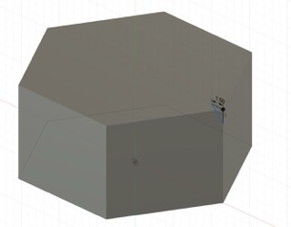
Then, I learned how to use the threads function. I was impressed by how many presets exist, and all the options for adjusting the thread size, width, sink length and width, and so on. After mirroring the faux-chamfer, finished using the Hole feature with threads. Then, the piece was done!

I also watched some other videos, to the tune of ‘pro tips’ and things I wish I knew.
Caliper Measurements
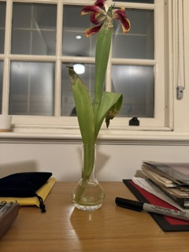
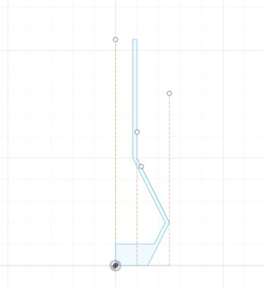
I was sitting at my desk and feeling lazy when I read the instructions for this assignment. Thus, I decided to model the first thing I saw on my desk: my flower vase. The vase was originally the bottle for bitters! It, along with a tulip, was a gift from my friend. I figured that the vase itself would be doable—especially getting the precise curvature of the body. One of my friends has a pair of calipers, so I borrowed those and measured all the points that the curvature changed and divided those numbers by 2 in my original sketch.I then revolved the sketch around a center line and felt satisfied. The next step was to dix the edges, by filleting, but after I had done all the visible edges I tried contorting my view of the model to be able to click and fillet the invisible ones (on the interior of the object). Once I realized I was being stupid, I took a step back.
Obviously there is a better way to do this, I thought. Realizing I didn't know what I was doing, I started doing the Fusion tutorials discussed in the other tab. Once I did the glass bottle tutorial and learned that I need to sketch with the intuition of scaffolding around the shell tool application, I went back to my vase sketch. This time, I only left the outside of the profile.

Then, I revolved the shape and applied the shell function. I used an inside thickness of 2.5mm, which is the measurement of my vase. Super satisfying. Touched it up with a couple of fillets and the vase was good to go!
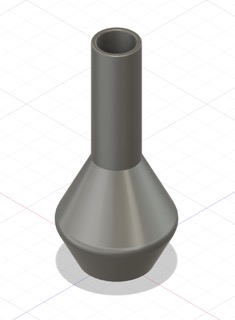
At this point, I went back to the instructions of the assignment. It says make at least two components--that's fine, I thought--and then I saw that I needed to make an assembly of the components. The only thing assembled with the vase, of course, was the flower. Flower it was, I thought.
The stem was the easiest part. I cheated a little bit because I knew the inner diameter of the vase, and I made the stem bent so it would be tangent at a particular point in the neck of the vase before curving up and out of it. However, I did not know how to create the stem shape best, so I went online and discovered how to use the pipe tool from a youtube video. That part was pretty easy.
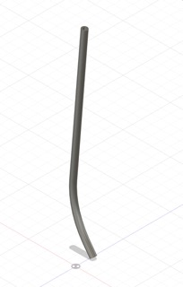
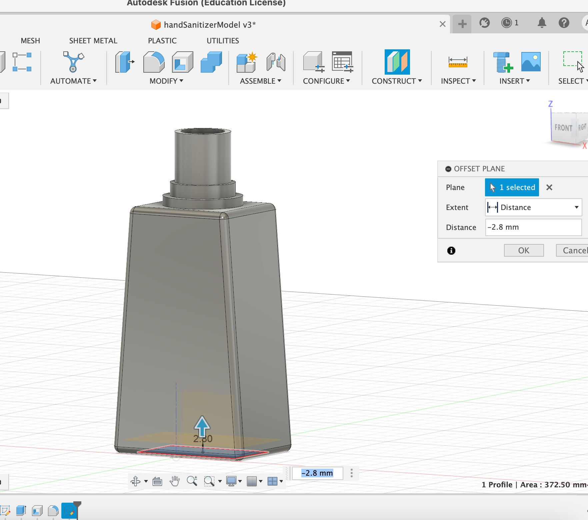
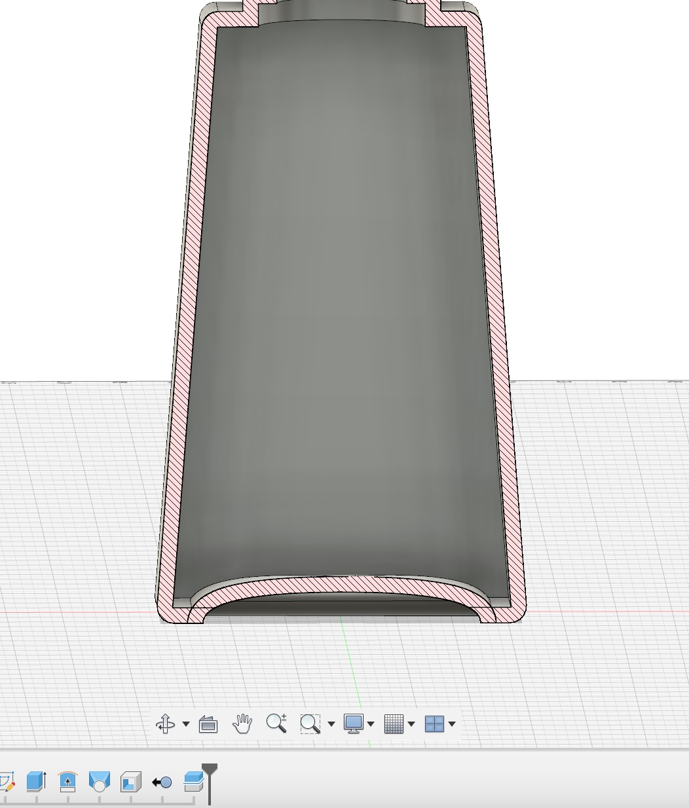
The next step was to create the threads on the neck of the bottle. This was relatively quick since I had watched a whole Youtube tutorial on it already. That being said, I am not sure how accurate this part of the model is because it was difficult to get precise measurements of the threads using the calipers, but I measured as best I could. Also, I still don't completely understand a couple of the selections in the thread menu like "thread type," and some of the thread dimensions are sort of pre-set in a dropdown menu rather than being able to type in specific numerical values (eg I wanted a size of 14.5mm but had to choose between 14 and 15mm), but I still think it turned out pretty close to my actual bottle.
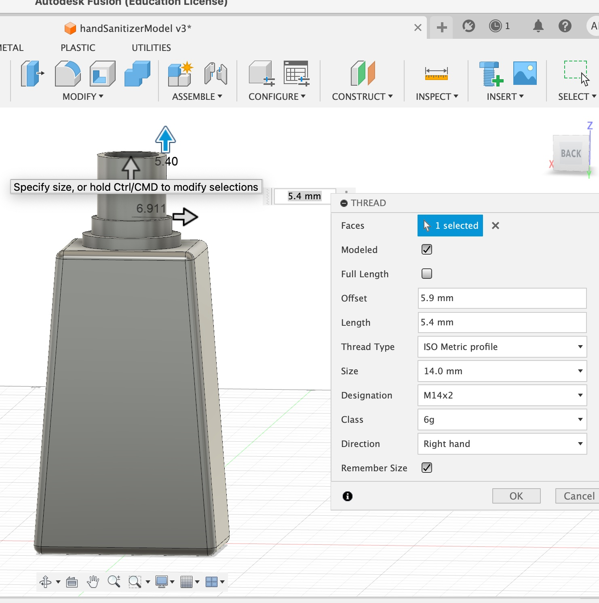
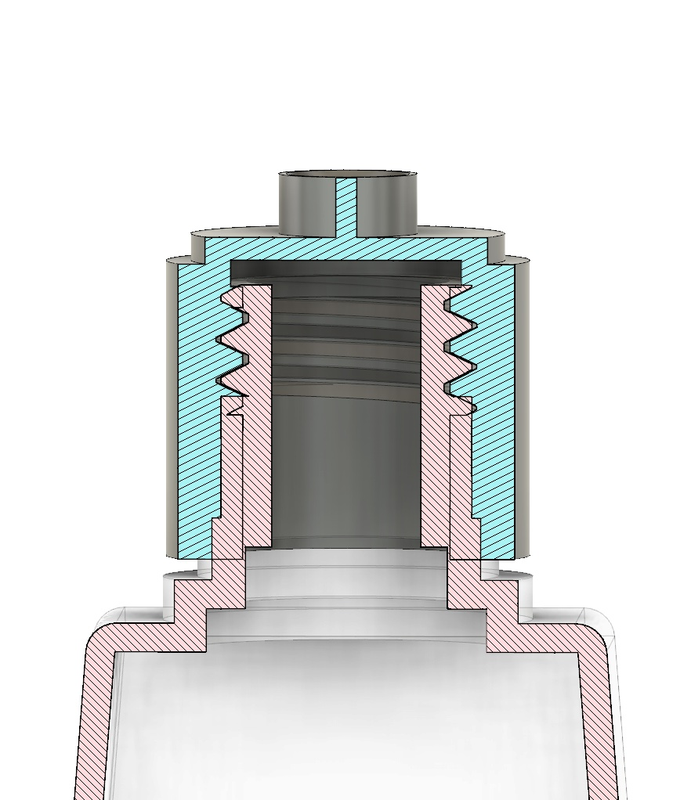
After finishing the model of the bottom bottle, I created a new component to start modeling the lid of the bottle. I definitely underestimated how difficult the lid would be, and I ran into two main issues when creating the model, the first being the threads in the bottom section of the lid and the second being that the top of the lid can open/close with a hinge. I started the model of the lid by making the basic shape of the bottom of the lid by itself (went relatively smoothly, although took some extra time to figure out how to create a hole through the whole object rather than just shell). When I tried to add threads to the inside and view the lid with the bottle to see how everything lined up, the threads were all overlapping instead of fitting into each other. Took me a while to fix the issue, but eventually I figured out how to rotate the lid component and shift it upwards (since the lid on my actual bottle doesn't actually twist all the way down), as well as cut away some of the lid thickness that was added when I added in the threads.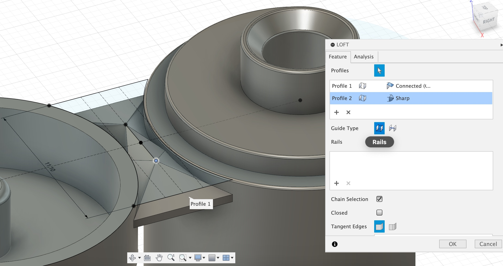
Once I finally aligned all of the threads, I created a separate object for the top section of the lid using the same plane as the bottom section of the lid so that it appeared to be open. I then tried to add a static model of the hinge connected the top and bottom of the lid. I tried to find a tutorial to see how to create a hinge, but all of the videos seemed to be showing how to create a round hinge rotating around a pin going through the middle, which was not what my hand sanitizer bottle has. So, I decided to just model the lid open without actual movement around the hinge. This still took some experimenting because I only knew how to loft a surface with respect to a single point when I wanted to loft the surface that was connecting the bottom and top lid with respect to a line segment--turns out you just do it one point at a time (wow took me way longer to figure that out than it should have). And like when I was lofting the bottom of the bottle component, I couldn't figure out how to shell the hinge so that the bottom surface would be parallel to the top surface that I had just lofted (sadly, I had spent so much time on everything and on trying to figure this out that eventually I came to terms with just leaving the surface flat...:( ). Overall, though, I did feel very accomplished when I finally finished the model (yay). Hopefully next time it just won't take me so long :) Here are the final things (bottom bottle by itself, top by itself, and the two put together as an assembly with a cut through the model so you can see the threads actually fitting together):


Vinyl Cutter
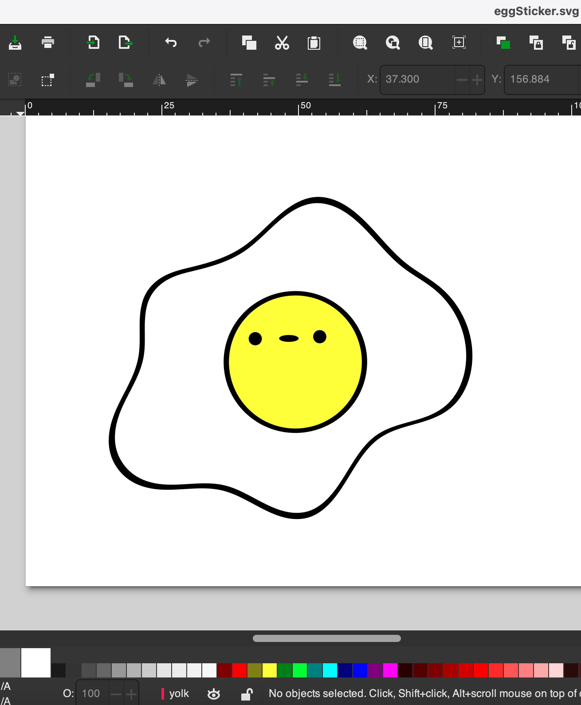
I was sooooo excited to hear about the vinyl cutter because I LOVE STICKERSSSS :D !!!!! After seeing the quick run-through of how to use the machine in class, I checked what color rolls of the vinyl were in the lab (black, white, red, yellow, bright green...). Based on those colors, I decided I wanted to make a sticker shaped like a fried egg using black, white, and yellow vinyl. I watched two tutorial videos for how to use inkscape to make a design with multiple colors (Youtube inkscape tutorial 1 & Youtube inkscape tutorial 2). I think the most helpful part was seeing how to draw curves and how to use the path-->difference function to cutout the parts of each layer where I wanted the bottom black layer to show through. I ended up with an inkscape file with three layers: the bottom black outline layer, the egg-white part with a circle cut out for the yolk, and a yellow circle with a face cutout.After making the inkscape design, I went back to lab to actually cut it out with the vinyl cutter. I was very lucky and got help from both Bobby and Kassia, so the cutting process went relatively well. I did forget to put down the wheels to secure the vinyl roll one time, but this just made the machine move the sheet around without actually scratching/cutting anything, so I was still able to use the same piece of vinyl for my sticker. I also had an issue with the yellow layer at first because I cut a sheet of vinyl that was too small for the machine and it would not print. Also, the face cutouts in the yellow layer of the sticker were super small, so I had to use a sewing pin to poke them out. Other than that, I think it went pretty well and I am super excited to have access to the vinyl cutter to make more stickers YAYAYAY!!!!!!!! (I decided to put my sticker on my cardboard box :)...and I also used some of the scraps to tape the corners of my box for extra support)
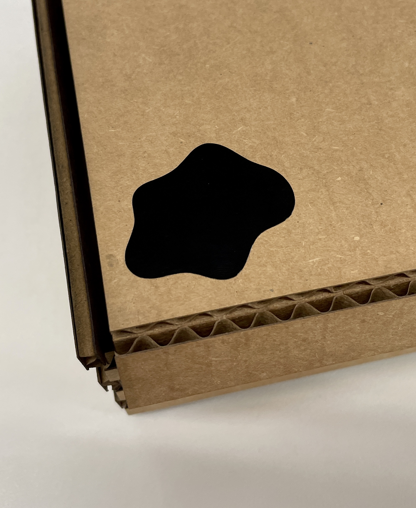
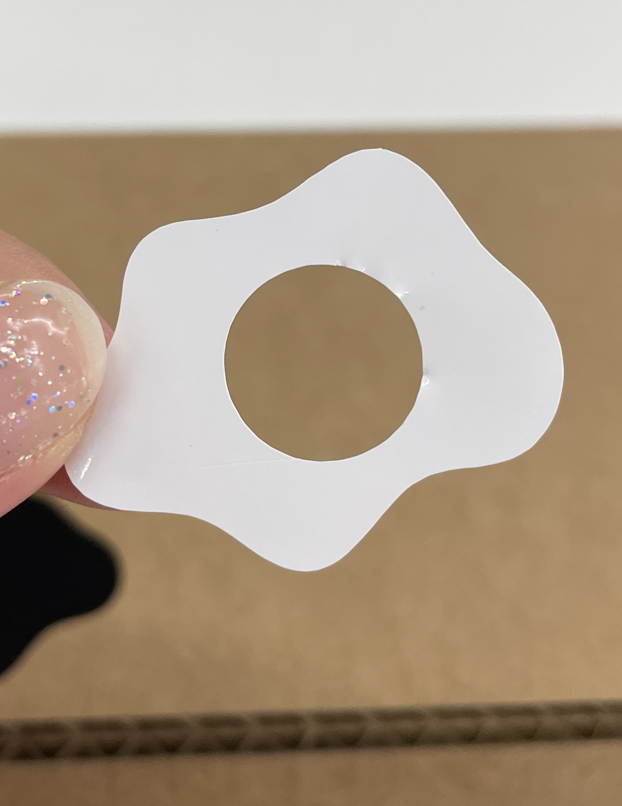
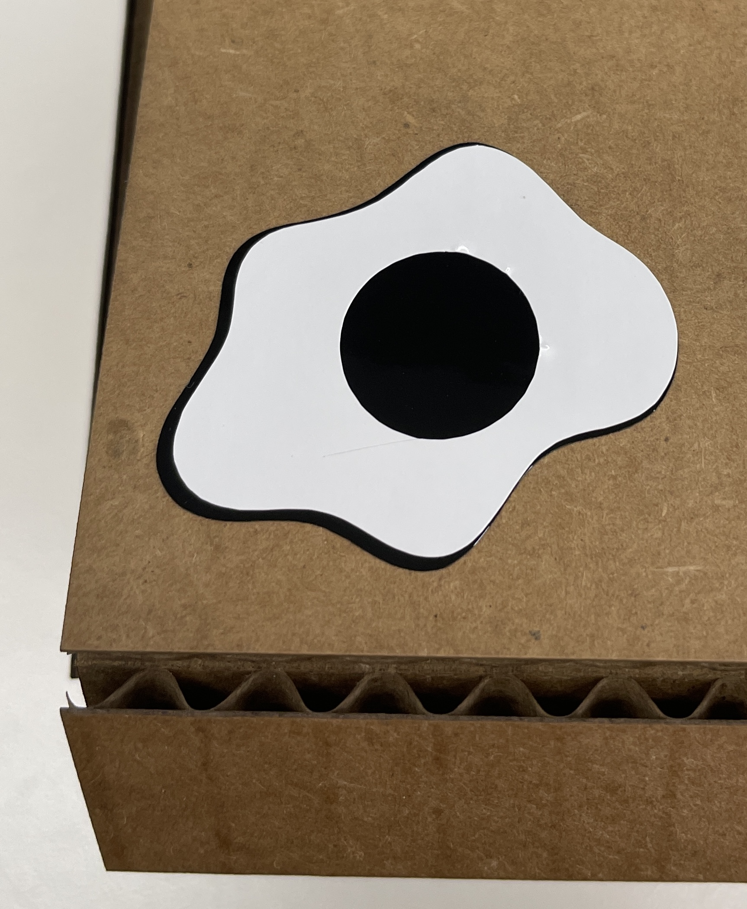
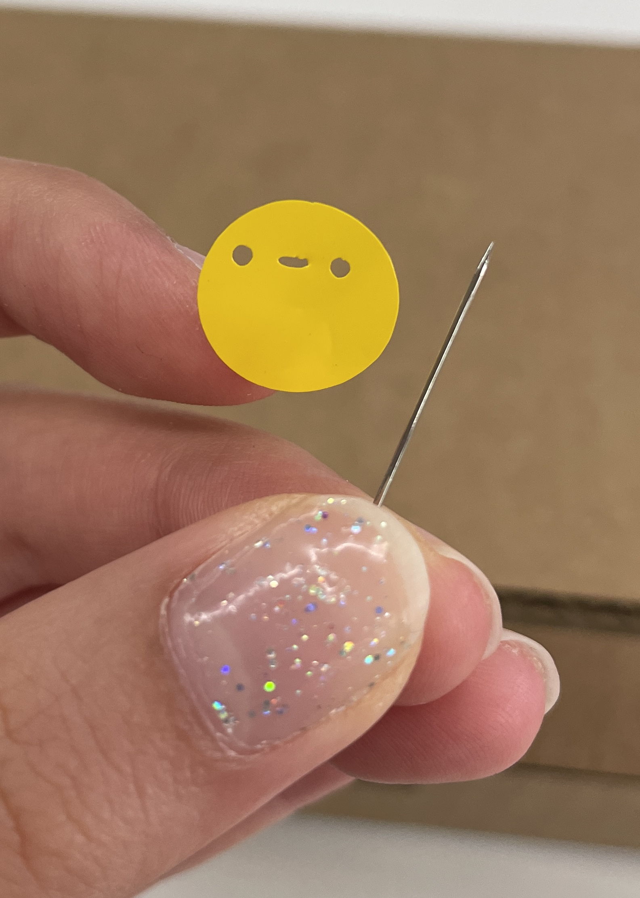
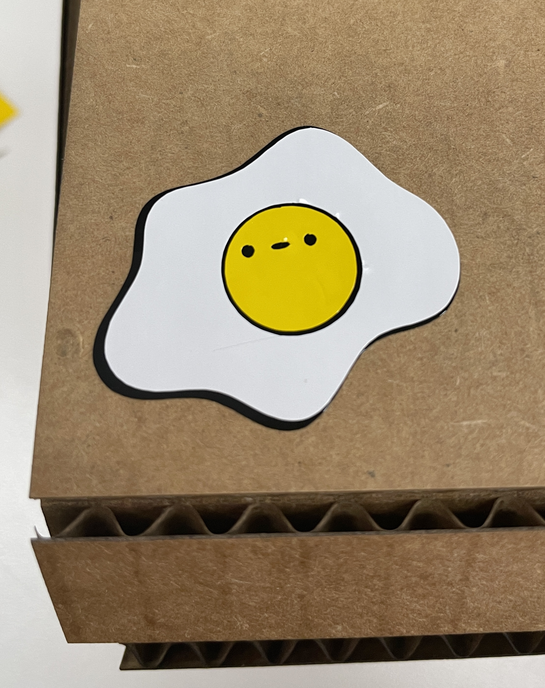